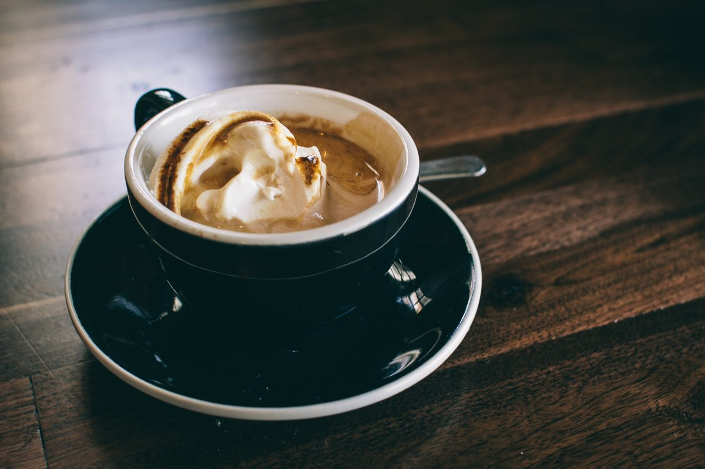
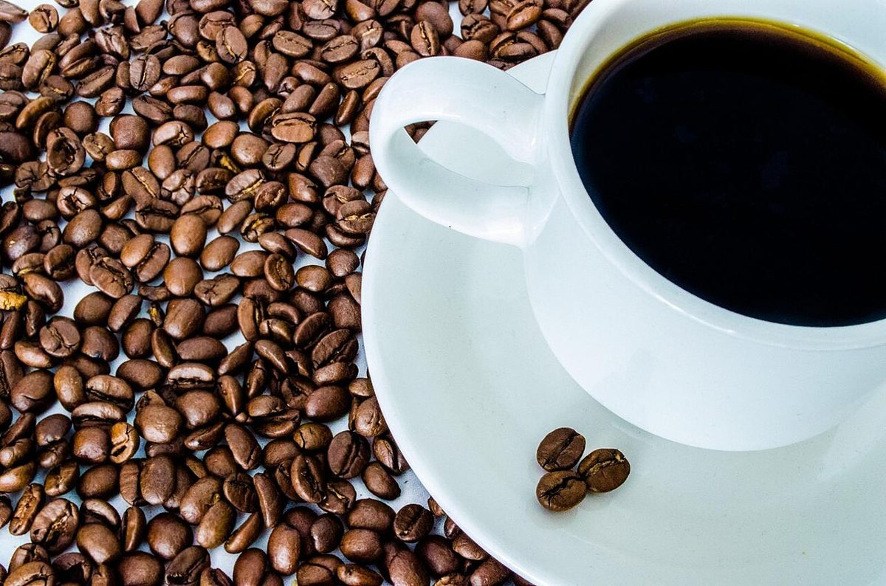

写真はコーヒーのイメージです。お店のものではなく、お店で提供している商品を示すものでもありません。
制作側の連想
LEDの部位を、配置図にしてみる
このサイトは、小さな砲弾型のLEDを図にしたつもりで作りました。六つの部位に番号をふり、上の図と並べています。制作側の連想で、お店の理念・由来とは無関係です。実際の部品の仕様を示すものでもありません。
凡例
六つの部位
- 1ドーム(樹脂レンズ)光を外へ送り出す、先端の丸い透明な樹脂の部分。
- 2発光チップ電気を流すと光る、ごく小さな素子。
- 3金線(ボンディングワイヤ)チップと片方の脚を結ぶ、髪の毛のように細い線。
- 4反射カップチップをのせる、すり鉢状の小さな台。光を前へ向ける。
- 5長いリード(アノード)プラス側につなぐ、長いほうの脚。
- 6短いリード(カソード)マイナス側につなぐ、短いほうの脚。つばの平らな側に出る。
ギャラリー(イメージ)
パンとコーヒーの写真





写真はパンとコーヒーのイメージです。お店のものではなく、お店で提供している商品を示すものでもありません。
ご案内
お店のこと(確認できたものだけ)
| 所在地 | 〒834-1221 福岡県八女市黒木町今２４２ |
|---|---|
| 電話 | 準備中 |
| 営業時間 | 準備中 |
| 定休日 | 準備中 |
| ご予約 | 準備中 |
| 駐車場 | 準備中 |
| SNS | Instagram @yamecha_story |